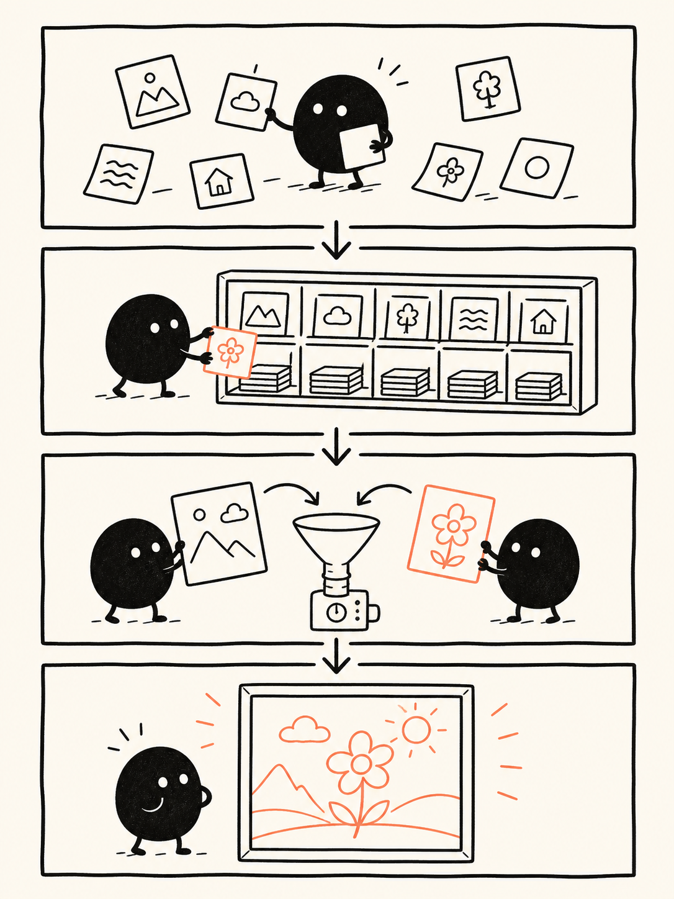
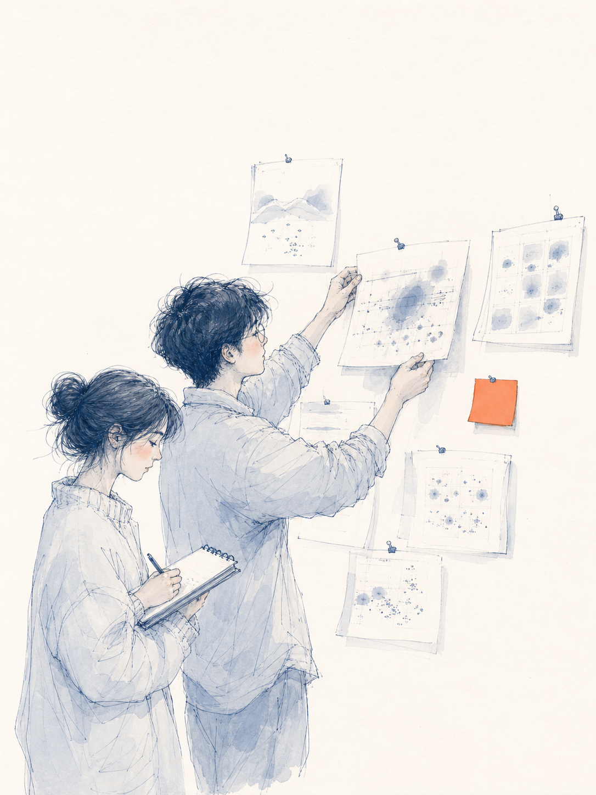

PROJECT 02 / VISUAL PROMPT ENGINEERING
不是新的生图模型，
是一套视觉风格合同。
它把“画成某种感觉”拆成可选择的风格、不可随意改写的配方、可校验的输入，以及必要时必须完成的多阶段编辑流程。
- 19
- 套可调用配方
- 0
- 仓库内图像模型
- 3
- 3.1 正式阶段
- 1
- 风格单一真源
CHATGPT GENERATED项目封面 · 从 Prompt 到视觉合同
用户内容交给 Agent 理解，视觉身份交给固定配方，组装正确性交给渲染器，像素生成交给外部图像模型。
上游样图证明“能画成什么样”；我们生成的内容资产回答“为什么画、代表什么、应该放在哪里”。
01 / APPLIED ASSETS
同一项研究，
三种图片职责
下面三张图片由本项目直接使用 ChatGPT ImageGen 生成。它们不再是随机风格样图，而是分别服务于“记住项目、看懂原理、感受过程”。准确标题与解释保留在 HTML 中，图片只负责视觉转译。
由 ChatGPT ImageGen 生成 · 2026-08-18
ROLE 01 · 让人记住
项目封面
把“零散提示词被整理成可复用视觉合同”变成一个可见场景，替换原来漂亮但与项目主题无关的家庭样图。
- 对应内容
- 项目概览与核心结论
- 当前位置
- 展厅首屏、主研究索引
- 可复用
- README、OG图、项目卡

由 ChatGPT ImageGen 生成 · 2026-08-18
ROLE 02 · 让人看懂
原理讲解图
不用图片内文字，单靠四格动作表达“收集内容 → 选择风格 → 组装约束 → 生成图片”，准确术语由旁边正文负责。
- 对应内容
- 五层实现与生成链路
- 当前位置
- 应用演示区
- 可复用
- 教程、工作流说明、分享长图

由 ChatGPT ImageGen 生成 · 2026-08-18
ROLE 03 · 让人感受
里程碑故事图
把“失败样例也是研究证据”从一句抽象原则转成团队行动：不丢弃失败图，而是贴回证据墙并记录原因。
- 对应内容
- 回归方法与上游问题发现
- 当前位置
- 应用演示区
- 可复用
- 复盘、里程碑、团队故事
CAPABILITY SAMPLE上游画廊证明一种风格能长什么样，不代表我们的项目内容。
→
CONTENT ASSET本区三张图片代表明确内容、页面职责和复用位置，并保留生成提示词。
查看完整生成提示词
03 / HOW IT WORKS
五层实现，一层真正出图
最容易产生误解的是把它当成一个图片生成器。源码恰好证明相反：仓库负责生成之前的路由、知识和调用合同。
- 01
宿主适配SKILL.md / AGENTS.md告诉不同 Agent 何时触发，以及完整规则放在哪里。
指令
- 02
执行协议PROTOCOL.md识别风格、推断占位符、处理比例、选择文本或 JSON 输出。
路由
- 03
风格知识STYLES.md将线条、色板、材质、构图和禁止项固化成19套完整配方。
真源
- 04
确定性渲染render_prompt.py原样提取模板、替换变量、校验锚点并构建调用包。
编译
- 05
外部图像模型GPT Image / Midjourney / other真正解释 Prompt、参考图和编辑请求并生成像素。
出图
普通风格
Prompt 是最终交付
Agent 填充内容参数，渲染器从单一真源原样取配方。下游模型负责执行，仓库不保证跨模型像素一致。
内容 → 风格编号 → 完整 Prompt → 图像模型
3.1 稳定变体
JSON 工作流才是最终交付
固定锚点随每张请求传入；前两阶段只能算中间图，只有第二次涂抹修正后的输出才能进入 final。
基础生成
→ scribble-correction
→ scribble-chaos-correction ✓
FAIL-CLOSED
错误时停止，不偷偷降级。
- 占位符缺失或多传：拒绝
- 锚点像素或尺寸变化：拒绝
- 把第二套配色、线条塞进主体：拒绝
- 3.1 正式生产只输出纯 Prompt：拒绝
04 / WHY IT MATTERS TO US
我们的扩展，是场景路由
上游已经回答“这种风格怎么画”。我们不应该再维护一份色板和线条规则，而应回答“研究与日常内容什么时候适合用它”。
研究方法把复杂流程讲清楚
用 1 或 4 号把研究步骤、证据分级和决策链拆成多格信息图。
推荐 01 / 04
研究结论把长报告压成一张卡
用小豆人突出要点，或用暖色扁平绘本建立更强传播识别。
推荐 04 / 18
项目封面建立每个研究项目的视觉记忆
二维水彩适合概念气氛，暖色扁平适合清晰、现代的项目主视觉。
推荐 11 / 18
里程碑故事让阶段成果有人和情绪
用单一橙色焦点和大片留白，把发布、修复或失败复盘变成一个场景。
推荐 10
团队故事连续输出统一的生活化故事卡
3.1 适合人物关系和日常事件，但正式使用必须执行锚点与三阶段合同。
推荐 3.1
+
新增日常能力，只增加“场景 → 风格”的映射。不复制 `STYLES.md`，不追加第二套风格段落，不把业务偏好混进受控主体字段。
05 / DAILY ROUTER
日常场景调用工作台
这里演示我们新增的轻量扩展：先选用途，再得到推荐风格和一段可以交给 Agent 的调用指令。它不会伪装成图像模型，也不会复制上游配方。
这段输出做了什么？
它只提交场景、风格编号、内容、文字和比例，并明确要求 Agent 从上游配方原样渲染。3.1 会额外要求正式 JSON、固定锚点和三阶段工作流。
06 / EVIDENCE & LIMITS
证据与边界
源码事实渲染器不含图像 SDK
Python 标准库只负责模板、PNG像素校验和 JSON；真正生图发生在仓库之外。
查看渲染器
工程事实测试验证合同，不验证审美
自动测试能证明变量、锚点和阶段状态正确，不能证明每张生成图都好看。
查看测试
实验事实保留失败样图是一项优点
3.1 记录了单次生成、一次修正和一次强修正的失败，但最终仍主要是作者人工判断。
查看验证记录
使用边界工具无关，不等于输出相同
不同模型对长 Prompt、中文文字、参考图和编辑支持不同，生产前仍需做自己的回归。
阅读完整分析